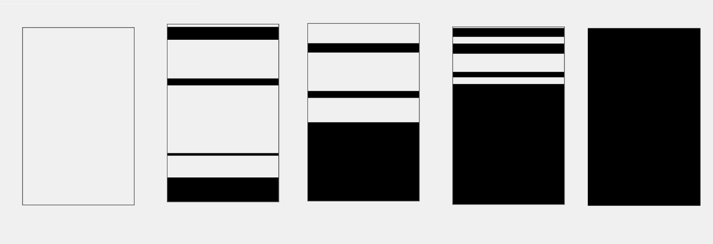
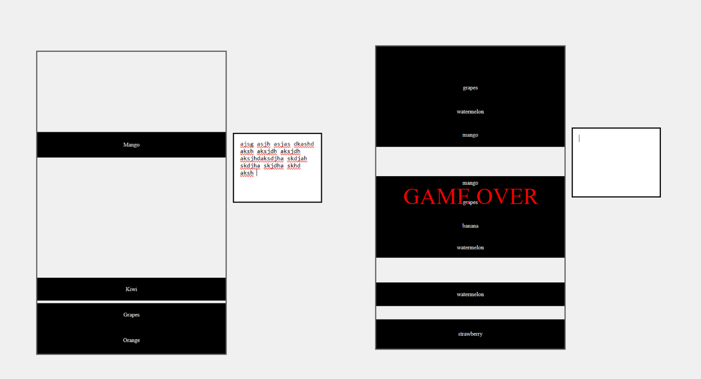
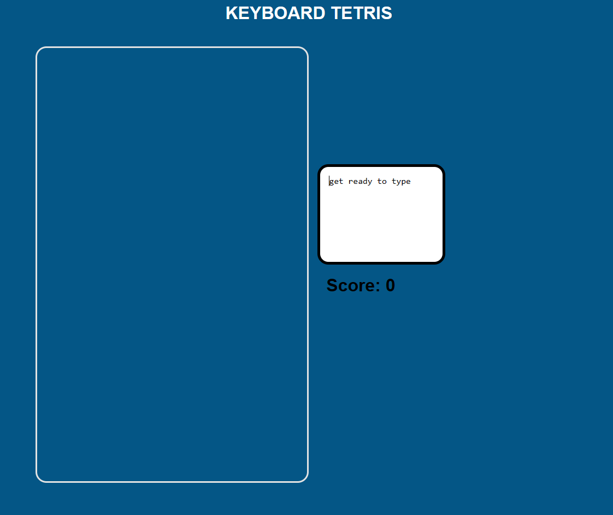
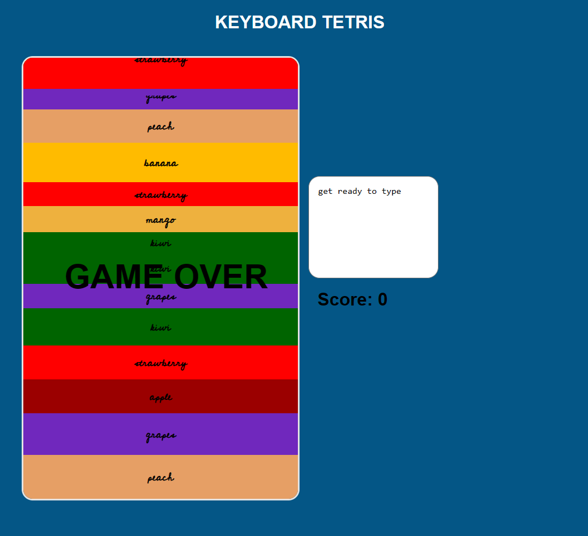

Research
I first discovered the story behind the interactive tool we all use daily: the keyboard. I learned
how the QWERTY layout evolved and how it significantly contributed to the growth of information
technology and data management. Later, I stumbled upon an intriguing video discussing how
non-English-speaking regions felt somewhat excluded due to keyboards primarily catering to the
English language. The video shed light on China's perspective, expressing concerns about being left
behind due to foreign language keyboards.

However, the video also highlighted China's innovative solution to this challenge. They leveraged
this obstacle to their advantage and developed their own method. They introduced the Pinyin system,
championed by Chairman Mao, which transformed their situation. This adaptation might have made
Chinese typists among the fastest in the world today, revolutionizing China's future in keyboard
typing

CLICK TO WATCH VIDEO
Brainstorming
The study of keyboard gave me multiple ideas of how typing can be used to play a game to test the speed.
1. Spaceship shooter: I was on the verge of starting this idea I really liked. The concept was to create a game featuring a spaceship tasked with shooting asteroids by typing the words displayed on them. Each asteroid would carry a random word, and typing it in time would destroy the asteroid. While I was researching and browsing the internet for inspiration, I unexpectedly found the exact game I had in mind. Initially, I felt relieved, thinking my idea was feasible, but I lost interest in pursuing it further because someone else had already developed it
ZTYPE2. Rocket type: I had an idea involving typing skills, where speed typing would control a rocket's flight to space. If you couldn't type fast enough, the rocket would lose balance and crash. While exploring, I discovered a similar concept where users typed a paragraph swiftly to move a car to the finish line. What caught my attention was the website's live racing feature where 3-4 players could join and race together
Type racer3. Type Keybord: My plan was to generate sounds corresponding to each key pressed while typing. I intended to use a single line of letters on the keyboard to replicate the entire keyboard's functionality. A link to a similar concept idea is given below.
Type DrummerKeyboard TETRIS - final idea
I envisioned a scenario where the user had to type the text showcased in each falling rectangle before it reached the ground. As time progressed, the speed of these falling rectangles would increase, raising the challenge until they reached the top of the container. Successfully typing a word would eliminate the respective rectangle and contribute to the player's score. It was an effective way to showcase typing speed and accuracy.
I was more drawn to this concept as it involved play and interaction, and it seemed unique since I couldn't find anything similar to the Tetris idea. I began by creating a basic black and white container with rectangles stacking on top of each other.
I then added few random words on each falling rectangles and executed the typing and disappearing maethod. But i was facing a lot of trouble since the disappearing rectangles where creating gaps while stacking up. After multiple trial and error mentods I was able to get around the problem
After showcasing the skelon model of the game(shown in the picture above) to Prof Ha, I was asked to try using matter.js. It was quite an intresting library to play around with. But unfortunately I was not able to add words within the individual rectangles. I even tried to take help from ChatGPT as well as a classmate in my orogr but was unable to find a solution to this. I then went back to the original idea on creating rectangles without matter.js
Matter.js TrialThe Code
All in all, the code was time cosuming to get the physics part right without using the matter.js library. But it was definelty fun and intresting, always learned new things, of using flags, display hide,figuring out logics and understanding math.random
 